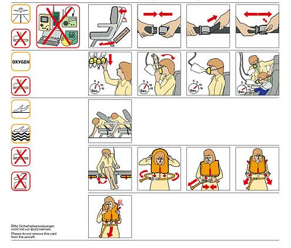
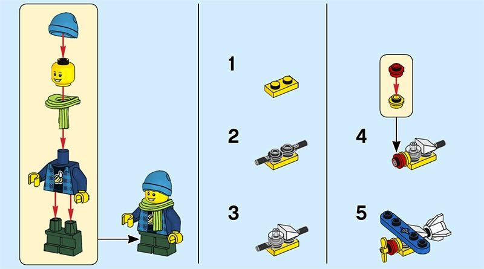

Algorithms can be written in different forms. So far, we’ve seen a few algorithms that are written in words. Algorithms written in words are called pseudocode. Pseudocode can look like the “code” we would write in a programming language. As you will learn later, it is much more flexible because its syntax and form are not as rigidly specified as a programming language.
|  |  |
| Aircraft safety procedures card | Lego instructions [Source] |
The LEGO instructions and the airline safety card pictured above are examples of algorithms written using pictures. They indicate, in a step-by-step manner, how to complete the tasks of building the LEGO model or escape the aircraft in an emergency.
Usually, words and pictures are how we write algorithms that are to be understood or carried out by humans. When we write algorithms for computers, we have to use a language that a computer can understand. Computer programs are written in a programming language. A programming language provides instructions to the computer in a way that it can both understand them and carry them out unambiguously. For this reason, programming languages are more restrictive in the syntax and style we can use to write algorithms. Many hundreds of programming languages exist, but for this course, we will just be learning one (a language called Python).
If a computer program doesn’t do what its programmer wants it to, it’s not the computer’s fault! The computer can only follow the exact instructions the program tells it to do whether or not it is what the programmer intended. As a result, a programmer must understand the algorithm that they are trying to write. If a programmer doesn't understand the algorithm, the chance that they'll be able to tell the computer how to perform the algorithm correctly is slim to none. It is advantageous for programmers to write algorithms using pseudocode first. It helps them to ensure they understand what they are about to program without having to worry about the details of the programming language syntax. Once understanding is reached via pseudocode, a programmer is much more easily able to get the details right when writing the algorithm in the precise syntax required by the programming language. Moreover, they are ready to implement the algorithm in any programming language that they know!